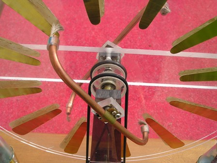
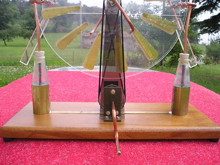
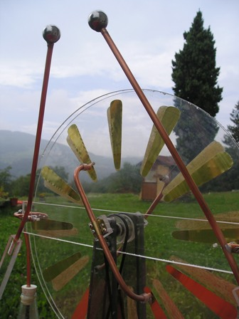

Poichè oltre alla chimica mi diletto ogni tanto anche di altro, stavolta parlo di una curiosa "macchina" che ho costruito tempo fa e che ha trovato degna collocazione come ammirato soprammobile in un locale di casa.
Oggetto delle odierne riflessioni è la "macchina di Wimshurt", che prende il nome dal geniale inventore britannico che la costruì nel 1882 e che divenne in breve uno dei più importanti, se non il più importante, di questa classe di generatori elettrostatici e l'unico modo con cui in quel periodo era possibile ottenere altissime tensioni in corrente continua.
Le macchine elettrostatiche non sfruttano nè pile nè trasformatori, ma solo il movimento meccanico di materiali isolanti opportunamente e ingegnosamente congegnati.
Poichè il dogma assoluto del principio di conservazione dell'energia va sempre e comunque rispettato, l'energia elettrica prodotta da queste macchine deriva quindi direttamente dall'energia meccanica spesa per il movimento delle loro parti mobili. (Che poi questa energia meccanica si trasformi solo in minima parte in corrente elettrica è un altro discorso).

La macchina di Wimshurt è costituita essenzialmente da due dischi affacciati in plexiglas (originariamente in vetro) coassiali e controrotanti, su ognuno dei quali sono incollati dei settori in sottile lamierino di ottone collegati diametralmente con delle spazzole metalliche.
Le fotografie dicono più di mille parole.

Non voglio parlare del principio di funzionamento di questa macchina: esso si può trovare facilmente in rete, basta digitare "macchina di Wimshurst" e c'è solo l'imbarazzo della scelta.
Sottolineo solamente che non è una macchina a strofinio, ma a induzione.
La difficoltà maggiore nella realizzazione è stata la costruzione dei due dischi e la precisione meccanica dell'asse di rotazione su cuscinetti a sfere; il plexiglas è un materiale fastidiosissimo da lavorare con qualsiasi attrezzo. Comunque (la necessità aguzza l'ingegno!) ci sono pian piano riuscito; idem per la costruzione delle pulegge di trazione e per i vari pezzi della struttura, dato che tutto deve essere di materiale assolutamente isolante dal punto di vista elettrico.
Con molta pazienza ho poi ritagliato in lamierino di ottone da 1/10 di mm i 24 settori metallici, incollati simmetricamente sulle facce opposte dei due dischi.
Tutte le parti metalliche sono costruite con del tubo di rame da 7 mm.
I due condensatori ad alta tensione (fatti sul principio delle vecchie bottiglie di Leyda) li ho riprodotti usando proprio due bottigliette... di aperitivo: l'armatura esterna è un cilindro di lamierino di ottone, l'armatura interna è semplice acqua nella quale pesca un tubetto di rame terminante in una sferetta.

La funzione delle sfere terminali è importantissima, perchè serve ad evitare "l'effetto punta" dei conduttori sui quali si accumula una notevole densità di carica; senza di esse la tensione elettrica elevatissima che si forma durante il funzionamente sfuggirebbe sotto forma di effluvio per effetto corona.
Ogni parte metallica della macchina deve avere forme arrotondate, assolutamente mai spigoli vivi.
Lo spinterometro (le due barre inclinate terminanti con le grosse sfere) raccoglie per induzione la tensione prodotta e deve poter essere regolabile in distanza per osservare le scariche a diverso potenziale.
Girando la manovella è interessante sentire lo sforzo che aumenta all'aumentare della carica dei condensatori, poi... bang!, un piccolo fulmine e la forza di trascinamento che diminuisce all'istante.
Il principio di conservazione dell'energia si sente letteralmente nelle mani!
La macchina risente fortemente dell'umidità atmosferica e la tensione prodotta cresce all'aumentare della secchezza dell'aria; la mia macchina nelle migliori condizioni produce quasi 7 cm di scintilla, equivalenti a circa 150 KV con un raggio di sfere allo spinterometro di 25 mm.
La scarica a questo livello è veramente suggestiva e per chi non se lo aspetta è impressionante la botta secca che produce il minifulmine.

Se la tensione è così elevata, altrettanto bassa è la corrente e l'energia sviluppata, dato che i condensatori hanno la capacità irrisoria di solo pochi pF, quindi non c'è alcun pericolo di rimanere fulminati. L'energia in gioco espressa in Joule è data dalla formula E = 1/2 CV2 dove C è la capacità in Farad e V la tensione in Volt; assumendo per semplicità una capacità di 100 pF ed una tensione di 100.000 V, l'energia è:
E = 0,5*100*10-12*1010
cioè solo mezzo Joule
Ma assicuro che quando uno ha visto e soprattutto sentito il rumore della prima scarica, non fa tanti calcoli e tiene le mani a prudentissima distanza dalle "palline"...
3 commenti